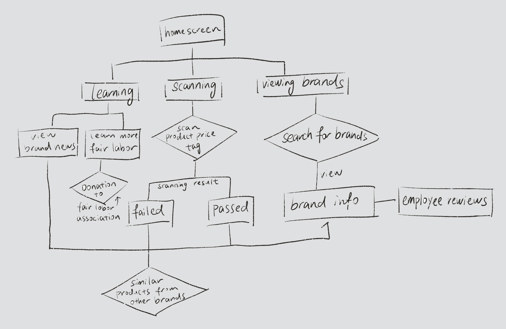
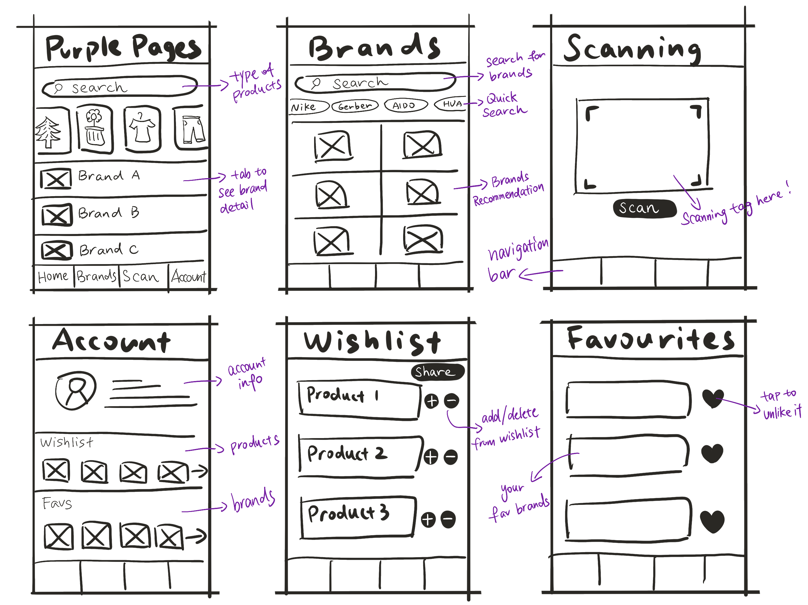
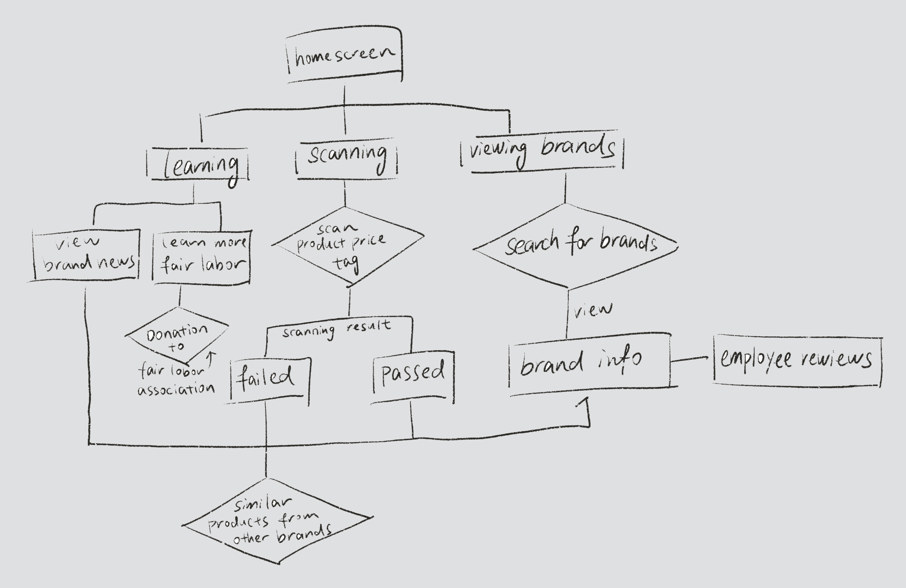
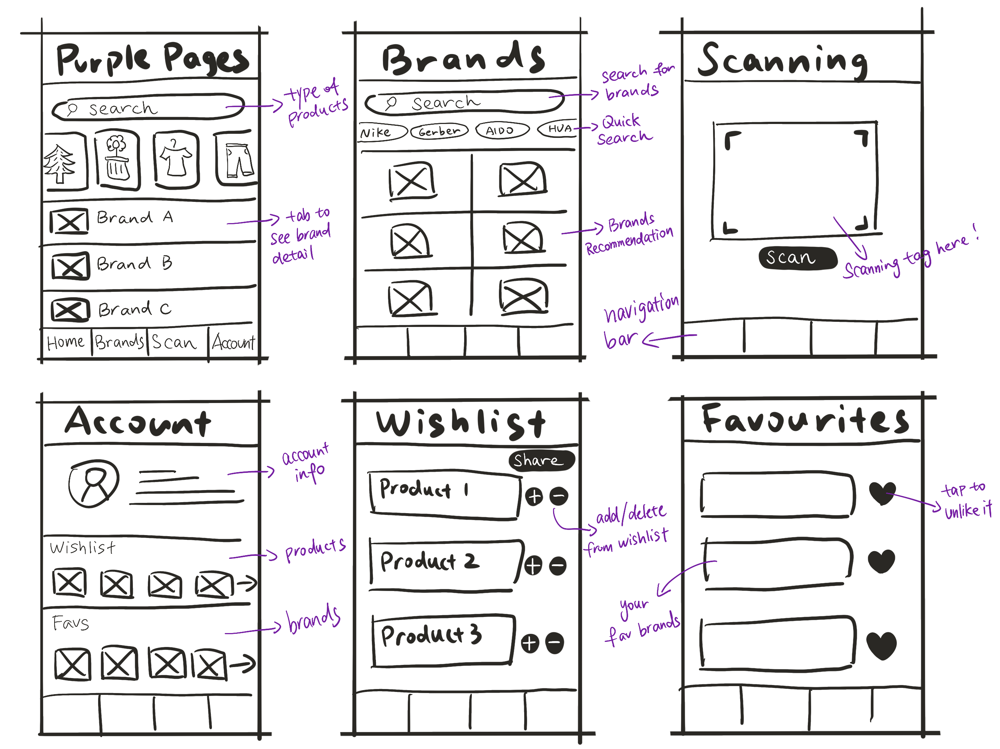
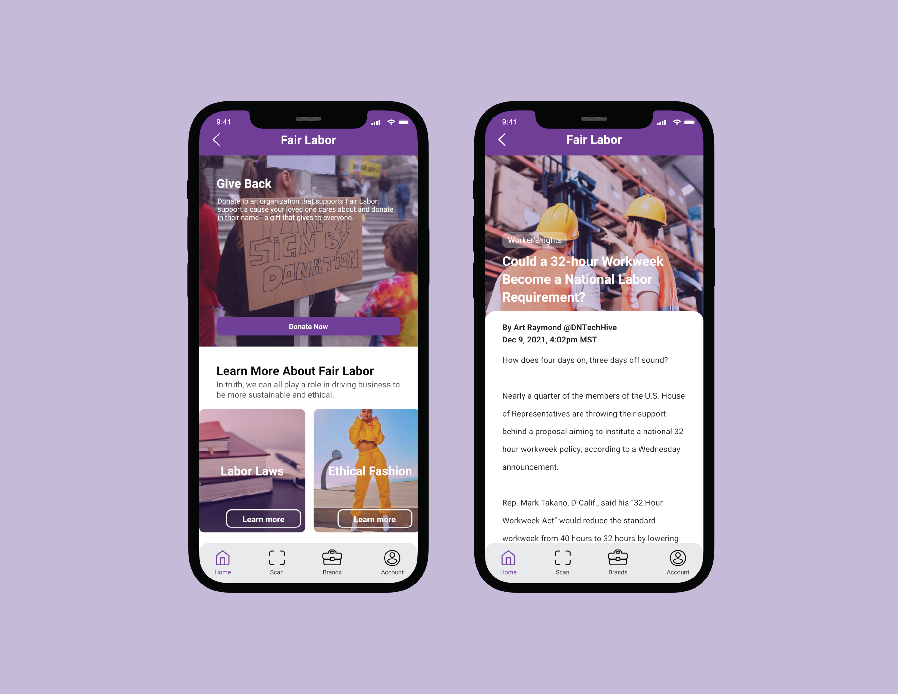
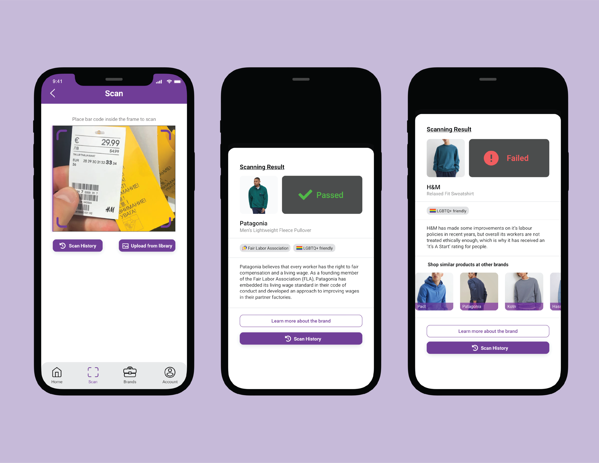
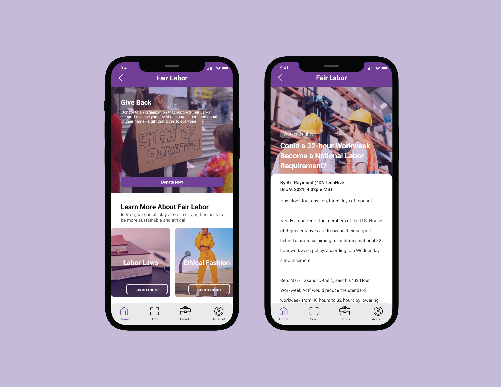
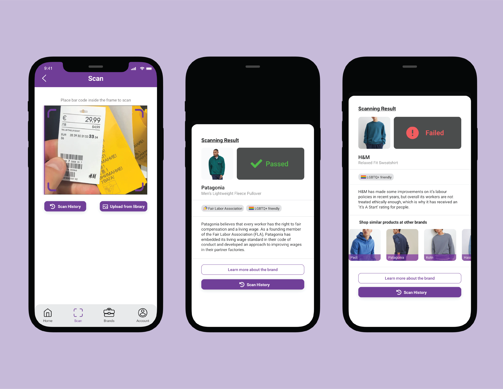

Team: Hana Chung, Yiting Zheng
A guidance tool for consumers to shop smart and support fair labor. Purple Pages is our solution to better educate young adults about fair labor practices of various brands, enabling them to make informed purchasing decisions. Purple Pages helps young adults become more informed consumers for several reasons; young adults may not have the financial capability to always purchase from the most transparent, ethical brands, and they may not have the time to seek out knowledge about the issues themselves. Purple Pages was created in response to a design challenge hosted by Adobe and Patagonia.
Our challenge was to design a third-party mobile app that informs a consumer segment about brands who support living wages directly benefiting workers and their families. The solution must create a way to view measurable impact and/or progress. Inherent in this problem is a power differential; those who suffer most from inequitable working conditions also often lack resources they need to call for action.
There are 4 main features of Purple Pages, all which differentially contribute to consumers’ information about brands. These four features enable consumers to seek out information about brands and news related to fair labor, determine whether products are created by brands which follow fair labor practices, and learn about brands’ labor practices directly from employees themselves.
 



 


